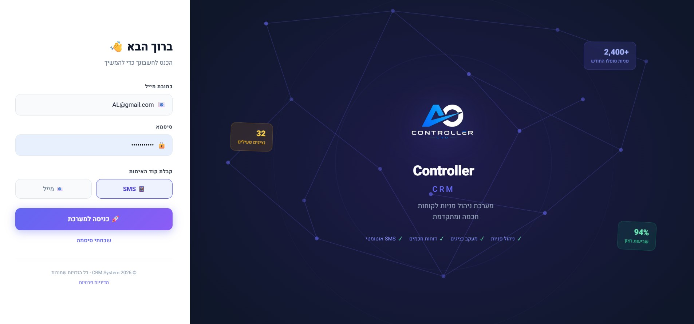
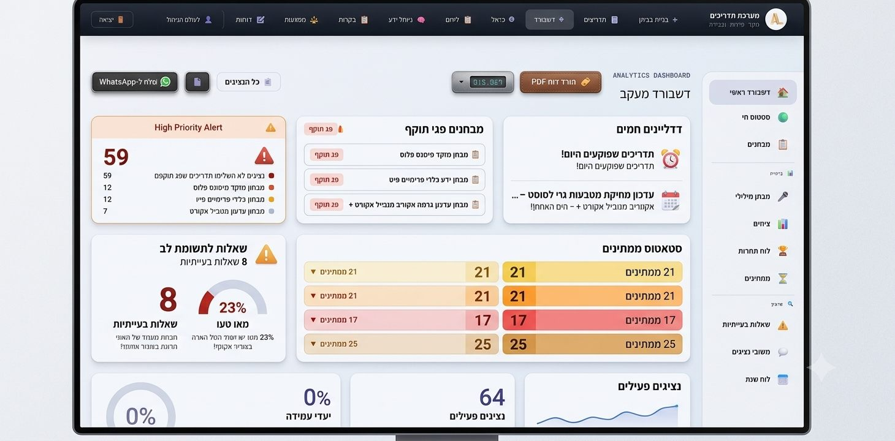
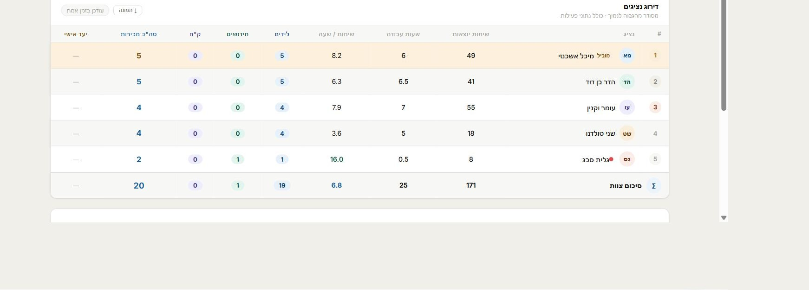
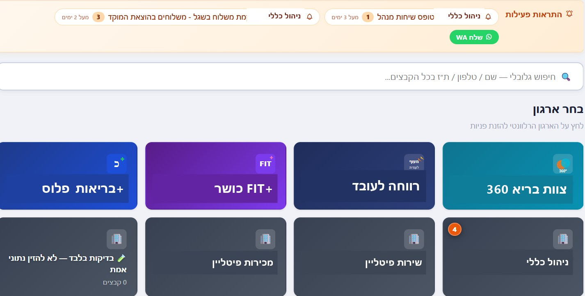
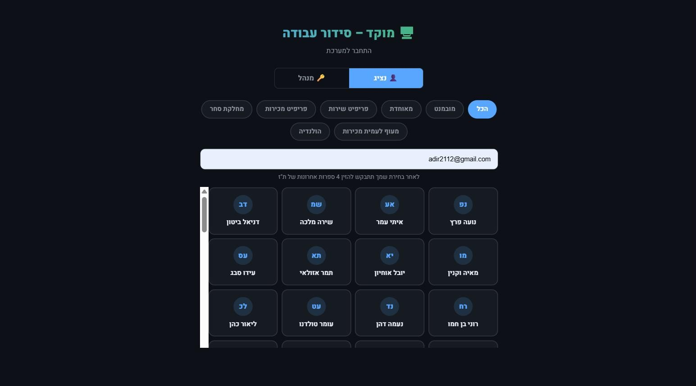
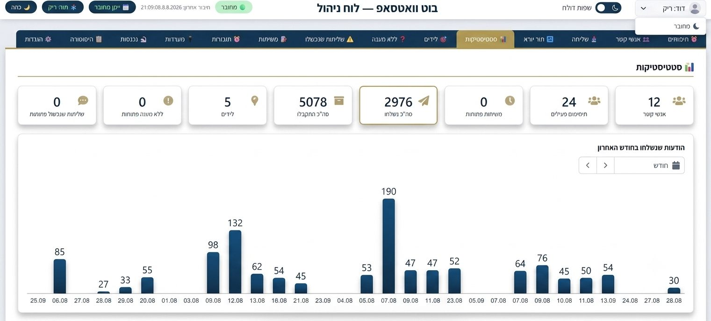
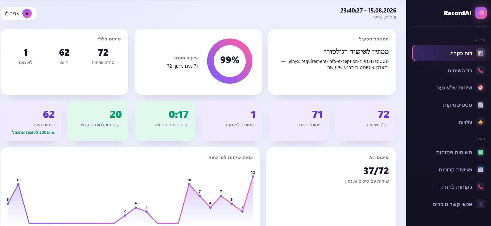
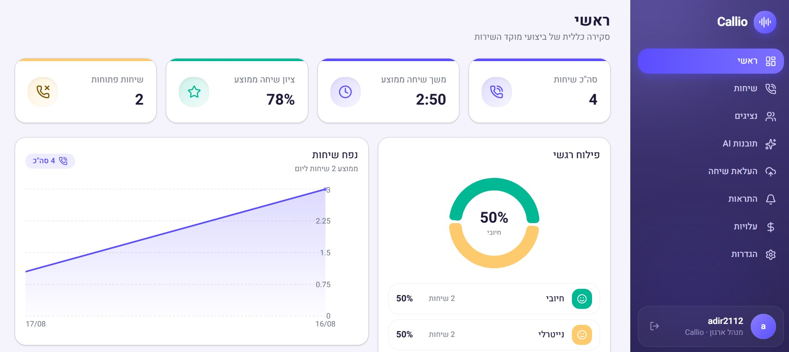

המערכות שלנו
שמונה מערכות. אפס עבודה ידנית מיותרת.
כל מערכת כאן כבר בנויה ורצה אצל לקוחות — והיא נקודת פתיחה, לא תבנית סגורה. אנחנו מתאימים כל מערכת בול לתהליך ולשפה של העסק שלכם.

01 · ניהול לקוחות
מערכת CRM
מערכת CRM לניהול לקוחות שמרכזת כל פנייה, שיחה והזמנה — בכרטיס לקוח אחד, מסודר וזמין לכל הצוות. במקום לחפש בין וואטסאפ, מייל וטבלאות, כל ההיסטוריה של הלקוח נמצאת במקום אחד.
- כרטיס לקוח מרוכז עם היסטוריית פניות ועסקאות
- סטטוסים, תזכורות ומעקב משימות אוטומטי
- חיבור לוואטסאפ, מייל וטלפון תחת ממשק אחד
- דוחות ביצועים לפי נציג, סטטוס ותקופה
02 · ידע ארגוני
מערכת ניהול ידע
מאגר ידע ארגוני מבוסס AI לעסק — נהלים, תשובות נפוצות, מדריכים והחלטות, הכול מסודר, מקוטלג וניתן לחיפוש חכם. כשעובד חדש נכנס או שאלה חוזרת על עצמה, התשובה כבר מחכה.
- חיפוש חכם בשפה חופשית מתוך כל מאגר הידע
- ניהול גרסאות ועדכונים למסמכים ונהלים
- הרשאות צפייה ועריכה לפי צוות ותפקיד
- מענה אוטומטי לשאלות נפוצות מתוך הידע הקיים

03 · תמונת מצב
דשבורד מכירות
דשבורד ניהול מכירות שמציג את המספרים האמיתיים של העסק — מכירות, יעדים ומגמות — בתצוגה אחת, ברורה ומתעדכנת בזמן אמת. בלי לחכות לדוח סוף חודש כדי לדעת איפה אתם עומדים.
- מעקב יעדים מול ביצוע בזמן אמת
- פילוח לפי נציג, מוצר, אזור או תקופה
- התראות אוטומטיות על חריגות ומגמות
- ייצוא דוחות להנהלה בלחיצה אחת

04 · מסמכים ותוקפים
מערכת ניהול קבצים עם התראות
מערכת לניהול מסמכים לעסק שמרכזת כל קובץ קריטי במקום אחד מסודר — עם התראות תוקף אוטומטיות לפני שרישיון פג, חוזה מסתיים או מסמך חסר. בלי הפתעות של הרגע האחרון.
- מאגר קבצים מסודר לפי לקוח, פרויקט או צוות
- התראות אוטומטיות על תוקף, חידוש ומסמכים חסרים
- הרשאות גישה מדויקות לפי משתמש
- חיפוש מהיר בתוך תוכן הקבצים


05 · כוח אדם ומשמרות
מערכת סידור עבודה
תוכנת סידור עבודה למוקד או לצוות שירות שמנהלת משמרות אוטומטית — לפי מחלקה, צוות וסניף — בלי טבלת אקסל שמתעדכנת ידנית כל שבוע מחדש. כל נציג נכנס, רואה את המשמרת שלו ומעדכן זמינות.
- סידור עבודה לפי מחלקה, צוות וסניף
- כניסת נציגים עצמאית לצפייה בשיבוץ האישי
- ממשק נפרד למנהל ולנציג
- חיפוש מהיר לפי שם ומחלקה
06 · אוטומציה ותקשורת
בוט וואטסאפ אישי
בוט וואטסאפ לעסק שמריץ אוטומציה בוואטסאפ מול לקוחות ואנשי קשר — תזכורות מתוזמנות, מענה אוטומטי ומעקב לידים — בלי לשלוח כל הודעה ידנית.
- הודעות ותזכורות מתוזמנות — יומי, שבועי או לתאריך קבוע
- מענה אוטומטי לפי מילות מפתח וניהול לידים נכנסים
- ניהול אנשי קשר וקבוצות עם היסטוריית שיחות
- סטטיסטיקות שוטפות על הודעות שנשלחו ושיעורי מענה


07 · הקלטת שיחות ואוטומציה
RecordAI
מערכת שמקליטה שיחות באייפון — פיצ'ר שלא קיים כברירת מחדל במכשיר — ומיד בסיום השיחה מפיקה תמלול שיחה מלא ושולחת ללקוח סיכום בוואטסאפ: על מה דיברתם ומי היה בשיחה. אם נקבע תאריך, הוא נכנס אוטומטית ליומן עם קישור ניווט מוכן ליעד.
- הקלטת שיחות אוטומטית באייפון, ללא צורך באפליקציה נוספת בזמן השיחה
- תמלול שיחות אוטומטי וסיכום מיידי בוואטסאפ — נושא ומשתתפים
- זיהוי תאריך ושעה שהוזכרו בשיחה והוספה אוטומטית ליומן
- קישור ניווט אוטומטי ב-Waze או Google Maps ליעד שהוזכר בשיחה
08 · מוקד שירות ומכירות
Callio
Callio היא מערכת ניתוח שיחות מוקד מבוססת AI שהופכת כל שיחה נכנסת לנתון מדיד — ציון איכות, משך שיחה וזיהוי הטון הרגשי של הלקוח. במקום להאזין ידנית לשיחות כדי להבין איך עבר יום העבודה במוקד, הדשבורד מציג הכול בזמן אמת: כמה שיחות נפתחו, מה הציון הממוצע ואיך מתפלג הסנטימנט בין הלקוחות.
- ניקוד אוטומטי לכל שיחה על סמך ניתוח AI
- זיהוי סנטימנט — חיובי, שלילי או ניטרלי — לכל שיחה
- מעקב נפח שיחות, משך ממוצע וסטטוס נציגים בזמן אמת
- דשבורד מוקד מרכזי לניהול נציגים ושיחות ממקום אחד

שאלות נפוצות
שאלות שחוזרות על עצמן לגבי מערכות AI לעסק
כמה עולה מערכת AI לעסק קטן?
המחיר תלוי בהיקף המערכת ובמידת ההתאמה האישית הנדרשת. אין תעריף אחיד לכולם — בשיחת האבחון הראשונה, שהיא ללא עלות, תקבלו הצעת מחיר מדויקת לפי הצרכים שלכם.
יש לי כבר אקסלים ותהליכים קיימים — אפשר להעביר אותם?
בהחלט. חלק גדול מהעבודה הוא בדיוק זה — לקחת את מה שכבר עובד באקסל או בתהליך ידני, ולבנות סביבו מערכת שעושה את אותו הדבר אוטומטית וללא טעויות העתקה.
אפשר להתחיל ממערכת אחת ולהוסיף בהמשך?
כן, וזו בדרך כלל הגישה המומלצת. מתחילים מהמערכת שפותרת את הכאב הכי דחוף כרגע (למשל CRM או בוט וואטסאפ), ומרחיבים בהדרגה לפי הצורך.
המערכות מתאימות רק לעסקים גדולים?
להפך — רוב הלקוחות הם עסקים קטנים ובינוניים שהרגישו שהם "גדלו" מהאקסלים והתהליכים הידניים. המערכת נבנית בהתאם לגודל ולתקציב שלכם, לא ההפך.